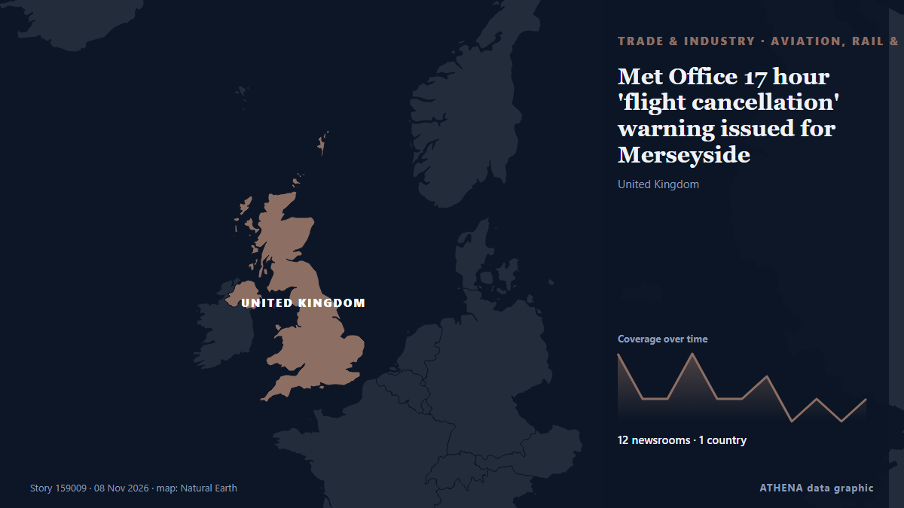

Trade, Industry & Infrastructure
SponsoredPresented by  Cybernetics and Artificial Intelligence Lab Welcome to the Cybernetics and Artificial Intelligence Laboratory, established at the Department of Business Administration of the National and Kapodistrian University of Athens. The lab is headed by Professor Dimitrios Thomakos. The lab aims to do research that can be published in top venues. Our research uses tools and methods of Artificial Intelligence, and lies in the following areas: - Forecasting - Decision making - Cyber security - Finance We are always looking forward to collaborating with exceptional students!
Cybernetics and Artificial Intelligence Lab Welcome to the Cybernetics and Artificial Intelligence Laboratory, established at the Department of Business Administration of the National and Kapodistrian University of Athens. The lab is headed by Professor Dimitrios Thomakos. The lab aims to do research that can be published in top venues. Our research uses tools and methods of Artificial Intelligence, and lies in the following areas: - Forecasting - Decision making - Cyber security - Finance We are always looking forward to collaborating with exceptional students!

Aviation, rail & roadMet Office 17 hour 'flight cancellation' warning issued for Merseyside
Disruption is expected to travel across road, rail and flights. from Liverpool Echo
| 27 Oct | 103 |
|---|---|
| 28 Oct | 94 |
| 29 Oct | 95 |
| 30 Oct | 99 |
| 31 Oct | 36 |
| 1 Nov | 65 |
| 2 Nov | 128 |
| 3 Nov | 91 |
| 4 Nov | 91 |
| 5 Nov | 105 |
| 6 Nov | 73 |
| 7 Nov | 38 |
| 8 Nov | 35 |
| 9 Nov | 10 |
Iran: Two tankers caught fire in Hormuz after hitting mines
Coalition says it destroyed two ballistic missile launchers The Coalition has released footage it says shows the targeting and destruction of two ballistic missile launch platforms. from Gulf News
GCC states sign landmark agreement to advance Gulf railway project
Dubai: Gulf Cooperation Council (GCC) countries signed a landmark railway agreement in Bahrain on Sunday, as work on the 1,700km network linking all six Gulf states surpassed 50 per cent completion… from Gulf News
Greece Resumes Cyprus Cable Surveys as Turkey Challenges Maritime Rights
Greece is moving ahead with seabed surveys for the Great Sea Interconnector (GSI), the €1.9 billion electricity project linking Crete and Cyprus, despite renewed Turkish objections over maritime… from Greek Reporter
Taiwan shuts Papua New Guinea office, cuts all aid and halts LNG purchases
It comes less than four months after Papua New Guinea's government announced the closure of Taiwan's mission in Port Moresby. from RNZ Pacific
Iran says no unauthorised vessels transited Strait of Hormuz overnight after navigation aids destroyed
DUBAI, Nov 9 (Reuters) - Navigational aid systems in the south of the Strait of Hormuz were destroyed and no unauthorised vessels transited the maritime route overnight, an unnamed Revolutionary… from Al-Monitor
AGOA warning should accelerate South Africa’s export diversification
The proposed loss of AGOA benefits from 1 January 2027 should push South Africa to diversify export markets, strengthen regional trade and accelerate reforms that lower production and logistics costs. from IOL
Alphabet discloses $548M stake in chipmaker Qualcomm
Alphabet, Google’s parent company, owned nearly 3 million shares in chipmaker Qualcomm at the end of September, a stake worth $547.9m, Reuters reported on Friday. from The Next Web
Hapag-Lloyd passes 1m teu in Africa and targets 1.7m teu by 2030
Hapag-Lloyd's African volumes have crossed 1m teu, the carrier said as it marked 20 years in South Africa. from Container Magazine
KONGSBERG expands Aegir SSA sonar family alongside virtual operator for maritime security and navigation
With the launch of Aegir17 and Aegir57N, KONGSBERG is now taking orders for all three models in its Aegir SSA (Subsea Situational Awareness) sonar family, offering tailored solutions for critical… from Naval News
ESG Shipping Awards International – THE CONFERENCE 2026
From Recognition to Real-World Action: Shipping Leaders Share Strategies for a Changing World The ESG Shipping Awards International – THE. from Cyprus Shipping News
Iran war latest: UAE rescues 22 crew members from burning cargo ship in Gulf of Oman
TAMPA, Fla., Nov 7: U.S. Central Command (CENTCOM) forces disabled a commercial vessel in the Gulf of Oman, Nov. from Arab Times
Tanker Burns After Strike in Strait of Hormuz
On Saturday, at least two tankers were attacked in the Strait of Hormuz, including one that caught fire. from The Maritime Executive
Pope Leo in Latin America: Papal Politics and Peru
Pope Leo heads to Argentina for the second leg of his South America tour, where he's expected to draw the biggest turnout of his Papacy so far. from France 24 English
UKMTO reported incident with bulk carrier near UAE coast
No further details were known at the time of the report. from TASS (English)
3rd oil tanker catches fire on Hormuz Strait: IRGC Navy
"One of the vessels is a supertanker; it is currently engulfed in flames following a powerful explosion," the Iranian Revolutionary Guard Corps (IRGC) Navy spokesperson said. from The Jerusalem Post
Peru airport thwarts plot to smuggle 3,000 tarantulas in dirty socks
During a routine customs inspection, agents noticed some unusual wriggling inside the luggage. from The Straits Times
One child dead, 269 treated for burn injuries in T.N. during Deepavali
To manage the festive emergency load, 1,283 ambulances were deployed on active duty across the State. from The Hindu
Tanker Catches Fire Off Oman's Khasab; Crew Evacuated
MUSCAT, Nov 8 : A tanker caught fire approximately eight nautical miles northwest of Khasab, Oman, on Saturday, prompting the evacuation of its crew, according to the United Kingdo... from Arab Times
Iran says 3 tankers caught fire in Hormuz
The Revolutionary Guards did not specify the names or nationality of the tankers. from Free Malaysia Today
Former EU negotiator warns UK will not be able to pick and choose trade rules
Michel Barnier said EU member states would insist the UK adopt measures such as the free movement of people if the country wants closer trade. from The Irish News (Belfast)
Electric Auto Rickshaws Reshape India’s Roads
India's electric rickshaw market booms, with one three-wheeler produced every 90 seconds. from Express Tribune
France probes if bomb threats against airlines linked to 'foreign powers'
Dozens of commercial flights in Europe were targeted by false threats over the past week. from Le Monde (English)
Bolsonaro’s Escape From Brazil Was Aided by Milei Adviser at Argentine Airport
A top adviser to President Javier Milei of Argentina met Flávio Bolsonaro, the defeated Brazilian presidential candidate, at an Argentine airport, three people involved in the operation said. from The New York Times (World)
US presses China to ‘immediately’ honor Busan trade commitments
In call with Chinese vice premier, Treasury Secretary Scott Bessent raises concerns over ‘recent Chinese actions,’ says progress depends on ‘concrete results' from Anadolu Agency (English)
Govt announces auto policy with focus on cheaper vehicles, EVs
The federal government on Saturday introduced the new auto policy, with a special focus on cheaper vehicles and electric vehicles (EVs). from Dawn
Strait of Hormuz will stay closed until US accepts its terms: Iran
Tehran, IRNA – Iran’s Armed Forces have control over the Strait of Hormuz, which will remain closed until the United States accepts Tehran’s conditions, Army spokesperson Brigadier General Mohammad… from IRNA (English)
Russian UAV hits house in Kyiv amid large warehouse fire in Obolonskyi district
A Russian UAV hit a house in Kyiv's Shevchenkivskyi district, while a large warehouse fire broke out in the Obolonskyi district on 7 November. from Ukrainska Pravda (English)
Heavy machinery arrives at protest against Russian grain transit in Latvia
A demonstration demanding a complete halt to the transport of agricultural products from Russia and occupied Ukrainian territories is taking place in Jēkabpils. from Ukrainska Pravda (English)
Ukraine to lose 1.9 p.p. of GDP due to infrastructure damage, seaport blockade — NBU
The mining and metallurgical sectors have suffered the heaviest losses, the report noted. from TASS (English)
Russia Reroutes Pig Iron to Arctic Port Over Black Sea Strikes
Russian exporters have begun shipping pig iron through the Arctic port of Murmansk for the first time since 1996, rerouting cargoes away from the Black Sea following nearly 700 maritime strikes this… from Kyiv Post
‘Message to the West’ bomb threats target European newsrooms, travel
Newsrooms in Ireland and Bulgaria received bomb threats from someone identifying themself as ‘Mikhail Andropov’. from Al Jazeera English
Qatar Airways launches first Gulf flights to Venezuela and Colombia
New Doha routes to Caracas and Bogotá expand the airline’s Americas network to 17 destinations. from News of Bahrain
IMO Council Urges Stronger Protection Of Seafarers Amid Threats To Global Shipping
The IMO Council has reaffirmed its commitment to protecting seafarers amid rising maritime security threats, condemning attacks on commercial vessels. from Marine Insight
Hoax or bomb threats? What we know about flight disruptions across Europe
Security inspections reveal no explosives as fighter jets escort planes amid Europe's major wave of bomb threats. from Al Jazeera English